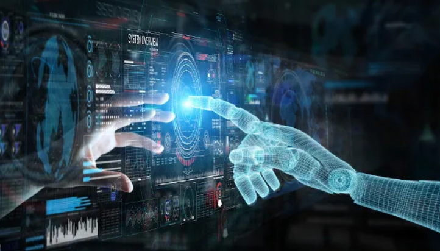

3 áreas em que a inteligência artificial já está melhorando nossas vidas

A visão de Rus destaca a importância da responsabilidade humana na aplicação da inteligência artificial.
Ela argumenta que quanto mais pessoas participarem ativamente do desenvolvimento e uso dessa tecnologia,
mais ela se democratiza e mais oportunidades surgem. Isso significa que um maior envolvimento e
diversidade de perspectivas podem levar a avanços mais éticos e inclusivos na inteligência artificial.
A democratização da inteligência artificial pode ser entendida como a ampliação do acesso, do
conhecimento e da participação de diversos grupos na criação e utilização dessa tecnologia. Isso implica
em garantir que a inteligência artificial não seja controlada apenas por poucos, mas sim disponível para
todos, a fim de que seu potencial possa ser explorado de maneira ampla e benéfica.
Ao envolver mais pessoas na área da inteligência artificial, torna-se possível ter uma gama
diversificada de ideias, perspectivas e preocupações. Isso contribui para um desenvolvimento mais ético,
evitando a exclusão de determinados grupos ou a perpetuação de preconceitos e viéses indesejáveis. Além
disso, quanto mais pessoas estiverem envolvidas, mais a tecnologia poderá ser aplicada para resolver
problemas complexos e melhorar diversas áreas, como saúde, educação, meio ambiente, entre outras.
No entanto, é importante também reconhecer os desafios e riscos associados à inteligência artificial.
Medidas adequadas devem ser tomadas para mitigar possíveis consequências negativas, como vieses
algorítmicos, invasão de privacidade e impactos sociais e econômicos. É necessária uma regulamentação
adequada, bem como discussões éticas contínuas para orientar o desenvolvimento e a utilização
responsável da inteligência artificial.
Em suma, a perspectiva de Daniela Rus destaca a importância de considerarmos a inteligência artificial
como uma ferramenta que depende das decisões humanas. Ao garantir sua democratização e utilizar essa
tecnologia com propósitos positivos, podemos explorar todo o seu potencial e promover um futuro mais
inclusivo e promissor.